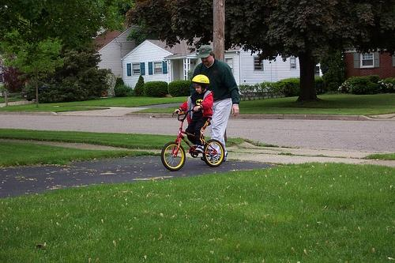
0.543250

0.578831

0.626203
0.633068

0.633685
0.641587

0.642923

0.658304

0.697196
0.709789
| Target image 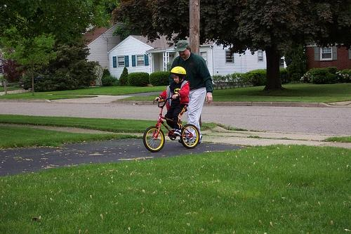 | 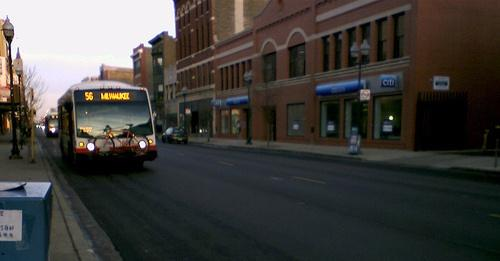 0.543250 | 0.578831 | 0.626203 | 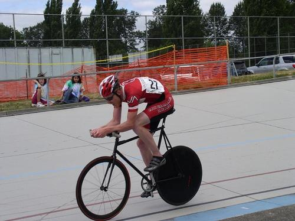 0.633068 | 0.633685 | 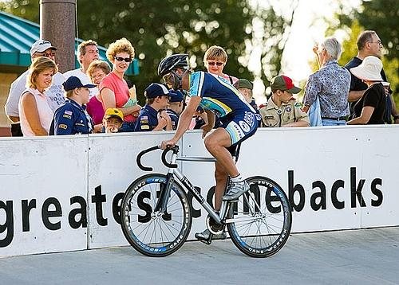 0.641587 | 0.642923 | 0.658304 | 0.697196 | 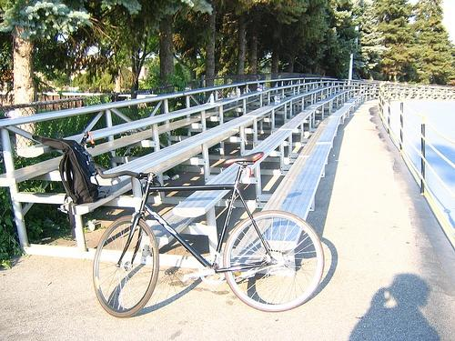 0.709789 |
Target image |  7072.107910 |  4586.299805 | 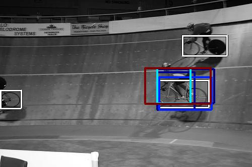 4462.902832 |  3750.316406 | 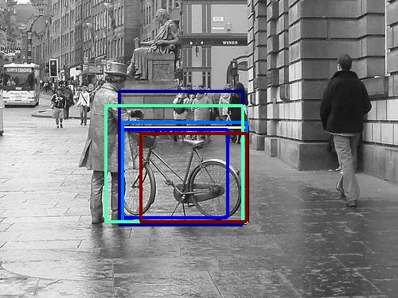 3048.684326 | 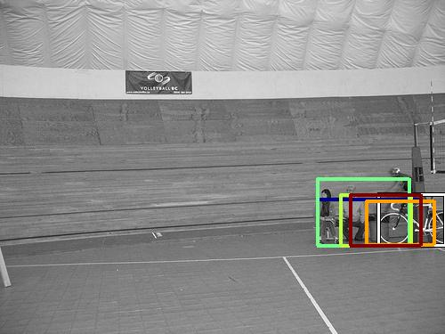 3020.655029 |  2727.070312 |  2593.481201 |  2407.567383 |  2356.337646 |
Target image |  14388.904297 |  12367.713867 |  8769.610352 | 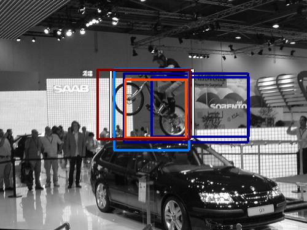 8550.425781 | 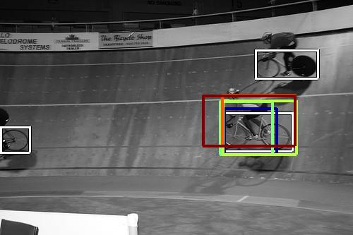 8397.417969 |  7354.263672 | 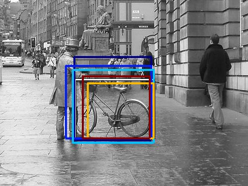 6320.570312 |  6090.038086 | 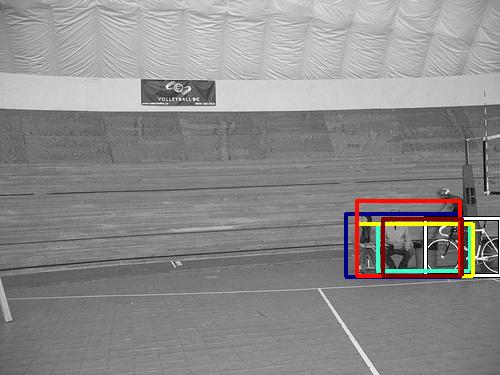 4704.570312 |  4439.749512 |
Target image | 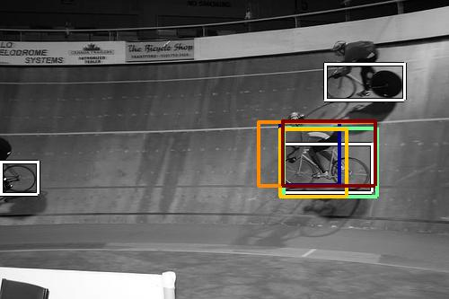 23036.910156 |  17605.714844 | 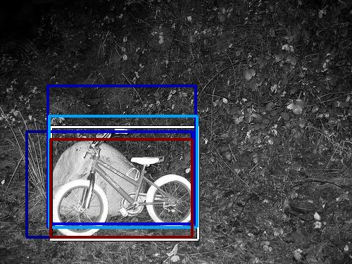 17345.296875 |  15981.582031 | 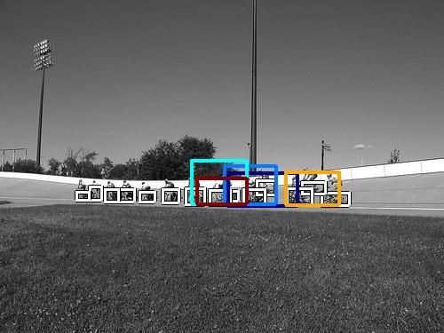 13946.154297 | 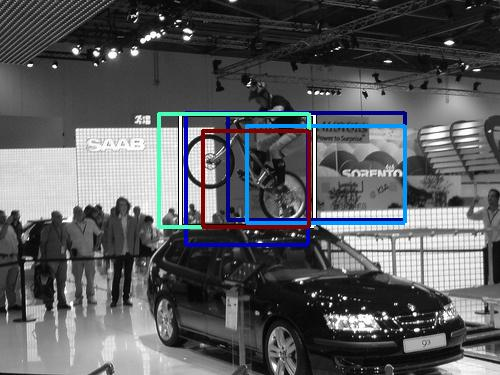 10665.052734 |  9127.439453 | 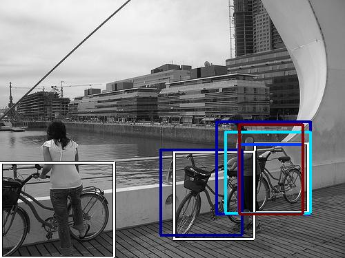 8248.561523 |  6830.764648 |  6395.626953 |
Target image | 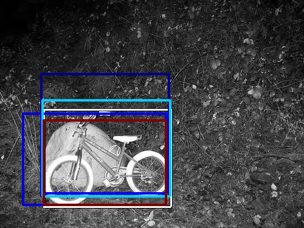 20975.527344 |  12041.257812 |  9538.365234 | 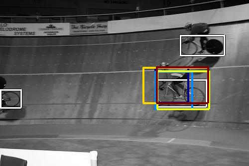 9099.488281 | 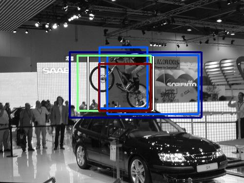 7522.874023 | 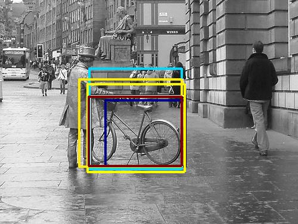 7390.354492 |  7088.190430 |  6597.632812 | 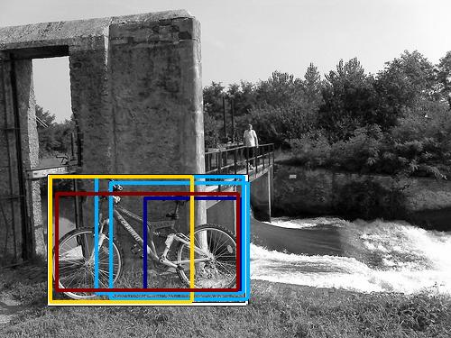 6255.264160 |  5835.458496 |